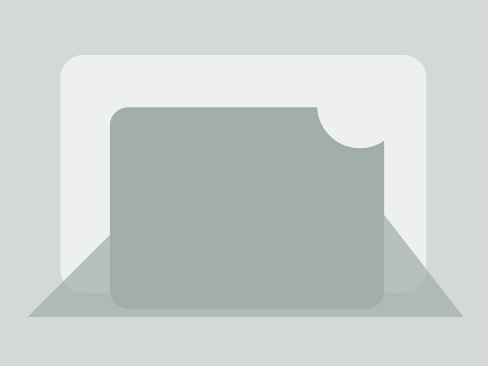
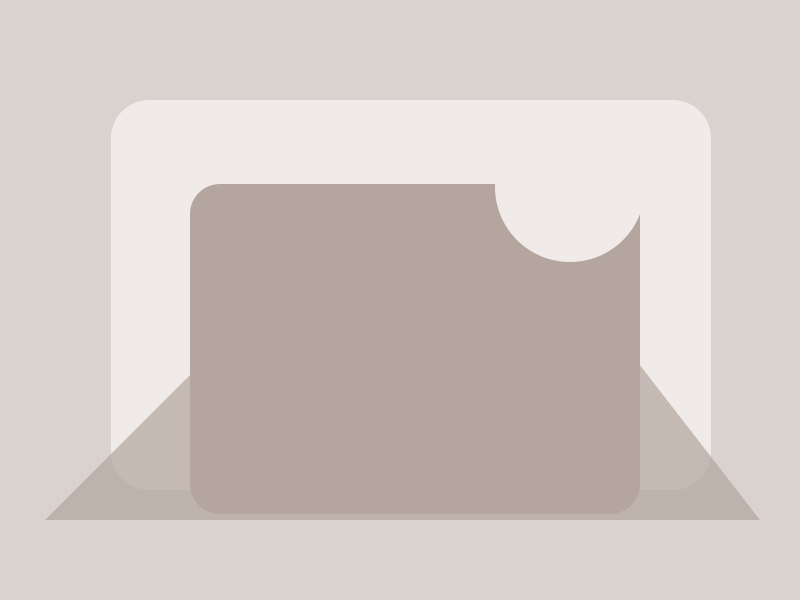
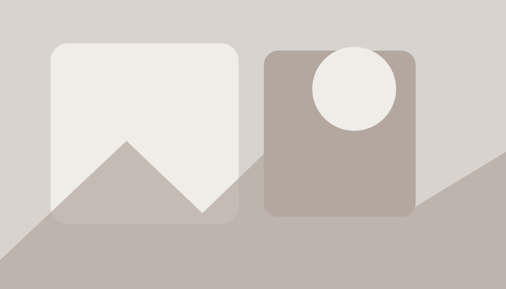

01
户外地板
适合庭院、露台和商业景观。
CSS DEVELOPMENT LAB · 14
当需求只是“横向滑动 + 自动吸附”时，不一定需要 Swiper。 本实验用纯 CSS 实现产品卡片和图片画廊的滑动体验，并明确 Scroll Snap 的适用边界。
CORE DEMO
这个区域在桌面可以鼠标滚动或触控板横向滑动，在手机端可以直接手指滑动。 每次滑动结束，卡片会自动靠齐到容器起始位置。
适合庭院、露台和商业景观。

适合建筑立面与室内装饰。

适合住宅隐私与花园分隔。
适合背景墙、吊顶和装饰空间。
← 横向滑动查看更多 →
GALLERY MODE
Scroll Snap 不只适合卡片，也适合案例图、产品细节图、Logo 列表和手机端横向内容。

CSS OR SWIPER?
如果只是横向浏览并吸附，CSS Scroll Snap 足够简单、稳定。 如果需要自动播放、分页器、复杂导航、无限循环、同步轮播等，再考虑 Swiper。